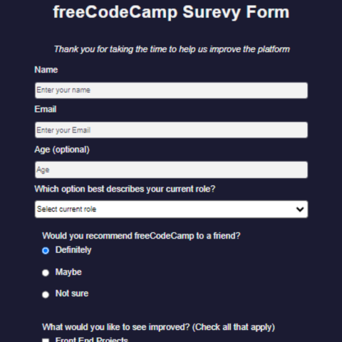
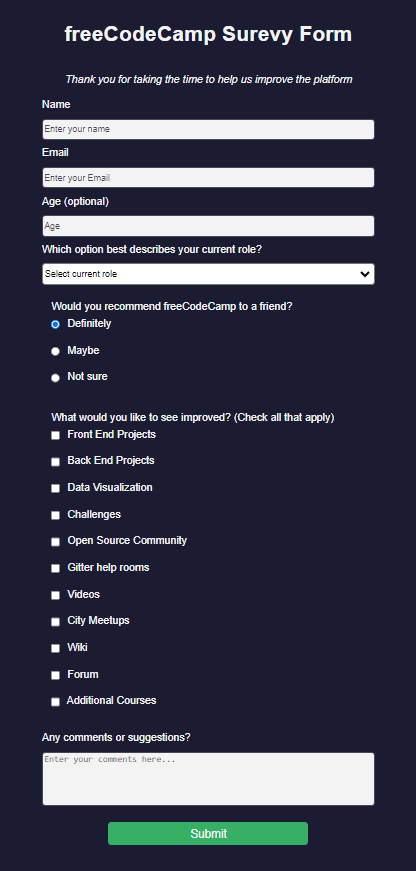

fCC Survey Form
Every now and again, we need to go back to basics to see not only what we have missed or forgotten, but also to see how far we have progressed. This project from the freeCodeCamp is one of those projects.

Project Requirements:
Lessons Learned: My major takeaways from this project are how a few simple tweaks to a few attributes can create a different feeling and looking object on the web and we should feel free to experiment with colors, spacing, and sizes.
Continued Development: Color and color combinations are a real struggle for me beyond the primary and secondary color spectrum. Learning more about color theory and how that translates to color values will help me make more attractive content for the web. It's something for me to look more into.